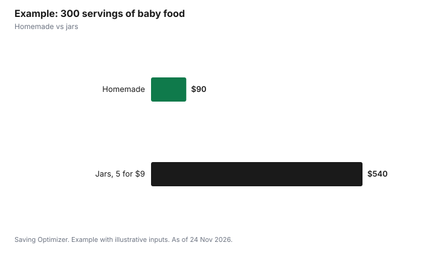

Kids · Canada
Homemade vs Jarred Baby Food: Cost and Time Trade-Offs

Homemade baby food is much cheaper than jars, but it takes time. A 128 ml jar or pouch costs about $1.80 to $2.17 at Walmart.ca, while homemade vegetable purée costs an example 30 cents a serving. A mixed approach works for many families: batch-cook simple purées and freeze them, and keep a few jars or pouches for travel and busy weeks.
Key takeaways
- Gerber Organic 128 ml: $1.97, or 5 for $9 (Walmart.ca, checked 24 Nov 2026).
- Homemade vegetable purée: an example 30 cents a serving.
- Fridge: 2 days for vegetables and fruit, 1 day for meat and fish.
- Freezer: up to 1 month in ice cube trays.
- Don't add salt or sugar.
Cost per serving
| Option | Price | Per serving |
|---|---|---|
| Gerber Organic purée, 128 ml (Walmart.ca) | $1.97 (5 for $9) | $1.80 to $1.97 |
| Love Child Organics, 128 ml (Walmart.ca) | $2.17 | $2.17 |
| Homemade vegetable purée | Example | About 30 cents |
Safety and storage
- Refrigerate right away; don't leave out more than two hours.
- Vegetable, fruit, legume and tofu purées: 2 days in the fridge.
- Meat, poultry and fish purées: 1 day in the fridge.
- Freeze in ice cube trays, then bags, for up to 1 month.
- Thaw in the fridge or microwave, never at room temperature, and don't refreeze.

A year of purées: an example
Example: 300 servings at 30 cents homemade is $90. At the 5-for-$9 jar price ($1.80) it's $540. Batch-cooking an hour a week covers most of it.
See baby's first-year costs and infant formula costs.
Sources
- Walmart.ca, Gerber Organic purée 128 ml and Love Child Organics 128 ml, checked 24 Nov 2026.
- Unlock Food (Dietitians of Canada), All about homemade baby food, checked 24 Nov 2026.
- Health Canada, Safe food handling for children ages 5 and under (March 2025), checked 24 Nov 2026.
Frequently asked questions
Is homemade baby food cheaper?
Yes, usually much cheaper per serving, but it takes time.
How long does homemade baby food last in the fridge?
Two days for vegetables and fruit, one day for meat, poultry and fish.
Can I freeze homemade baby food?
Yes, in ice cube trays and then bags, for up to one month.
Should I add salt or sugar?
No.
When does jarred baby food make sense?
For travel, daycare, busy weeks and foods that are hard to purée.
Researched and drafted with AI assistance and fact-checked against official Canadian sources. How we create content.
Note: Not medical advice; ask your health care provider about starting solids. Homemade cost is an example. Education only.